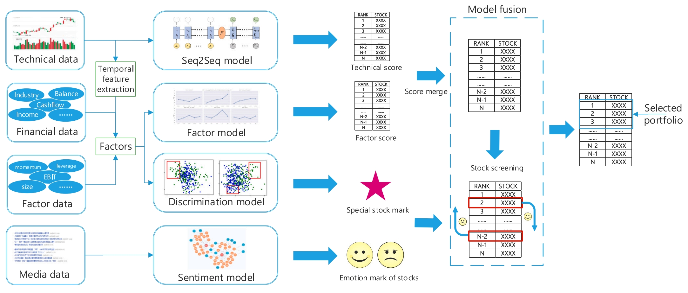
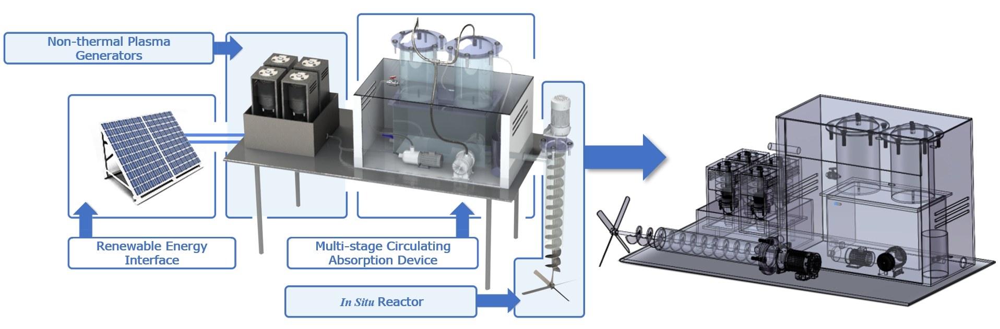

Research
Projects
-
Engineering Applications of Multisource Information Fusion in Cement Clinker Burning Process
- Aug. 2022 - Jan. 2024
- The cement industry is a fundamental global industry that produces billions of tons of building materials each year. The clinker burning process is a complex and essential step in cement manufacturing, determining the quality of cement products. The presence of free calcium oxide (f-CaO) is crucial for assessing cement quality and energy consumption. Traditional measurement methods for f-CaO have a time delay due to offline chemical analysis. To address this, we developed a new soft sensor framework that process variable data, flame images, and mechanistic knowledge to estimate f-CaO content in real-time. This framework significantly improves f-CaO soft sensing performance, reducing RMSE by about 12% and increasing correlation by nearly 30% compared to the state-of-the-art model DFETM. This framework is now deployed on Alibaba Cloud's Industrial Brain® platform, serving its clients in the cement industry.
-
Multisource Information Fusion-based Scoring and Screening Stock Selecting Framework
- May 2021 - Jan. 2022 
- With advancements in computer technology and data accumulation, AI and machine learning are increasingly used in quantitative finance, but most models focus on predicting stock prices rather than creating stock portfolios. Our work introduces a novel framework that combines scoring and screening models. The scoring model, using Seq2Seq and factor models, ranks stocks based on historical trading and factor data. The screening model, incorporating a novel discriminative model and a media sentiment model based on a weighted stock relation graph, is developed to detect anomalous stocks. we validate this framework in China's A-share market, and the framework shows significant improvements in portfolio stability and risk reduction, demonstrating high sensitivity to stock selection scale and prediction period, which allows for quick adjustments based on specific trading strategies.
-
Non-thermal Plasma Nitrogen Fixation System
- Aug. 2019 - Mar. 2021 
- The Haber nitrogen fixation process sustains 40% of the world's population but has significant energy and environmental drawbacks, consuming 1-2% of global energy annually and emitting nearly 300 million tons of CO₂ and ammonia-laden wastewater. Inspired by the idea that thunderstorms can fix nitrogen, we developed a small nitrogen fixation device based on non-thermal plasma catalysis, named "THOR" after the Norse god of thunder. Comprising a renewable energy interface, a non-thermal plasma generator, a multi-stage circulating absorption device, and an in situ reactor, THOR aims to be compact, efficient, quick-acting, and eco-friendly. Experiments and neural network simulations indicated that the system achieves a minimum nitrogen fixation energy consumption of 1.15 kWh per mol. Economically, a single generator can produce approximately 600kg of nitrogen fertilizer annually, reducing the combustion of 938kg of standard coal and 2.3 tons of CO₂ emissions. Our invention won the first prize in China's National Energy Conservation and Emission Reduction Competition, and as team leader, I received direct admission to ZJU's graduate school before my junior undergraduate year.